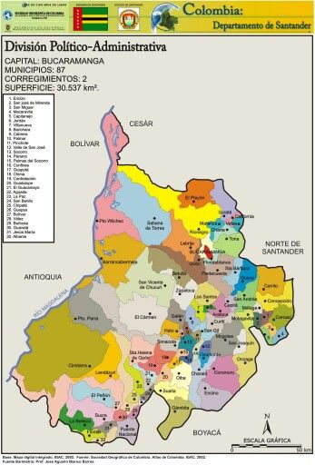

DEPARTAMENTO DE SANTANDER
MAPA DE SANTANDER

HISTORIA DE SANTANDER
La historia del departamento de Santander se remonta a tiempos precolombinos, cuando la región estaba habitada por los guanes, una cultura indígena destacada por su agricultura y la producción de tejidos. Con la llegada de los españoles en el siglo XVI, la región fue colonizada y se fundaron ciudades como Girón en 1631 y Bucaramanga en 1622. Durante la época colonial, Santander fue principalmente un centro agrícola y minero.
Un hecho clave en la historia de Santander fue la Revolución de los Comuneros en 1781, un levantamiento contra los impuestos coloniales que se considera uno de los primeros movimientos hacia la independencia de Colombia. Esta región desempeñó un papel crucial en las guerras de independencia, siendo hogar de líderes y combatientes que lucharon por la libertad del país.
Tras la independencia, Santander pasó por varios cambios políticos y territoriales. En el siglo XIX, fue escenario de conflictos internos debido a las tensiones entre liberales y conservadores, lo que generó guerras civiles que afectaron al país. A lo largo del tiempo, Santander se ha consolidado como una región con una fuerte identidad, reconocida por su participación en la historia nacional y su desarrollo económico.
En la actualidad, Santander es famoso por su industria, el turismo de aventura en lugares como el Cañón del Chicamocha, y la producción agrícola, especialmente en sectores como el café y el cacao. El espíritu rebelde y emprendedor de sus habitantes sigue siendo una parte esencial de su cultura y su historia.
ECONOMIA DE SANTANDER
La economía del departamento de Santander es diversa y está impulsada por varios sectores clave, como la agricultura, la industria, el turismo y los servicios. Tradicionalmente, la región ha sido un centro agrícola importante en Colombia, pero en las últimas décadas también ha destacado en otras áreas económicas.
Uno de los pilares de la economía santandereana es la agricultura, donde sobresalen productos como el café, el cacao, la caña de azúcar, el tabaco y el maíz. El departamento es conocido por producir uno de los mejores cacaos del país, lo que ha llevado a Santander a ser líder en la producción de este cultivo a nivel nacional. El café también juega un papel importante, y aunque no es tan grande como en otras regiones del país, es un producto de alta calidad.
La industria también ha tenido un crecimiento significativo en Santander, especialmente en la ciudad de Bucaramanga, que se ha consolidado como un importante centro industrial. Sectores como la manufactura, la construcción y la producción de alimentos procesados han impulsado la economía local. En particular, Bucaramanga es conocida por su desarrollo en la industria del calzado, la joyería y la confección.
El turismo ha tomado un papel cada vez más relevante en la economía santandereana, especialmente con el auge del turismo de aventura y el ecoturismo. Lugares como el Cañón del Chicamocha y el municipio de San Gil se han convertido en destinos populares para la práctica de deportes extremos como el parapente, rafting y senderismo. Esto ha impulsado el desarrollo de infraestructura turística, generando empleo y nuevas oportunidades en la región.
Finalmente, los servicios también son un sector clave en la economía de Santander, en particular el comercio y las actividades financieras. Bucaramanga ha crecido como un centro de negocios y servicios financieros, atrayendo inversión en estos sectores.
En conjunto, la economía de Santander ha evolucionado para incluir tanto actividades tradicionales como emergentes, lo que le permite mantener un crecimiento sostenido y diversificado.
CULTURA DE SANTANDER
La cultura de Santander es una mezcla de tradiciones indígenas, españolas y criollas, lo que le otorga una identidad fuerte y única. La región se caracteriza por su espíritu independiente y rebelde, que se remonta a la época de la Revolución de los Comuneros, un hecho que sigue presente en el orgullo y el carácter de sus habitantes.
Uno de los aspectos más destacados es el folclore, con expresiones musicales como el torbellino, una danza tradicional de la región. Las fiestas y celebraciones populares, como la Feria Bonita de Bucaramanga y las fiestas patronales en distintos municipios, son ocasiones donde la música, la danza y la gastronomía juegan un papel central.
La gastronomía santandereana es muy reconocida a nivel nacional, con platos tradicionales como la hormiga culona, un manjar exótico, y la arepa santandereana, hecha con maíz pelado y chicharrón. Otro plato típico es el mute, una sopa espesa a base de maíz, carne y vegetales.
Santander también es conocido por su artesanía, especialmente en las áreas rurales, donde se elaboran productos como tejidos, sombreros y objetos de cerámica. Estos reflejan las tradiciones indígenas y coloniales que se han mantenido a lo largo del tiempo.
El departamento tiene un fuerte **sentido de pertenencia** y una rica historia que se refleja en su arquitectura colonial, sus tradiciones y el orgullo de sus habitantes por ser parte de una región que ha jugado un papel importante en la historia de Colombia.
TURISMO DE SANTANDER
El turismo en Santander ha crecido significativamente en los últimos años, gracias a su geografía diversa y su oferta de actividades de aventura y ecoturismo. La región es famosa por sus paisajes naturales, historia colonial y actividades al aire libre, lo que la convierte en un destino atractivo para turistas nacionales e internacionales.
Uno de los principales destinos turísticos es el Cañón del Chicamocha, una de las maravillas naturales de Colombia. Aquí se encuentra el Parque Nacional del Chicamocha (Panachi), donde los visitantes pueden disfrutar de impresionantes vistas, realizar senderismo, parapente y montar en teleférico sobre el cañón.
El municipio de San Gil es conocido como la capital del turismo de aventura en Colombia. Es el lugar ideal para practicar deportes extremos como rafting, espeleología, parapente, rappel y kayak. Cerca de San Gil, en Barichara, un encantador pueblo colonial, los turistas pueden disfrutar de calles empedradas, arquitectura colonial bien conservada y un ambiente tranquilo.
Bucaramanga, la capital de Santander, ofrece una mezcla de modernidad y naturaleza. La ciudad cuenta con múltiples parques, centros comerciales y una activa vida nocturna. Además, su cercanía a otros destinos turísticos lo convierte en un excelente punto de partida para explorar la región.
Santander también cuenta con sitios históricos importantes, como el Monumento a los Comuneros en El Socorro y los antiguos pueblos coloniales de Girón y Zapatoca, donde los visitantes pueden revivir parte de la historia de Colombia.
En resumen, Santander es un destino turístico completo que ofrece desde experiencias emocionantes en la naturaleza hasta recorridos históricos y culturales.